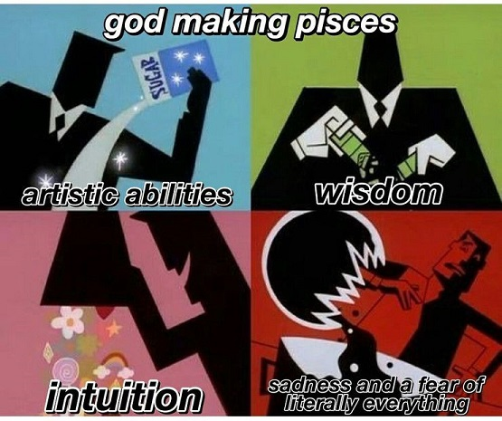
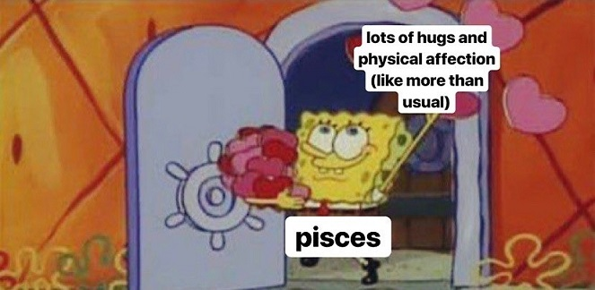

Symbol:Two fish
Element:Water
Quality:Mutable
Keyword:"I Believe"
Strengths:Highly Imaginative, Curious, Nurturing, Affectionate, Artistic, Wise
Weakness:Escapist, Overly trusting, Tendency to play victim or Martyr
As the last sign of the zodiac family, Pisces represents the eldest among all the zodiacs. All qualities and attributes of the entire zodiac
family is imbibed within the pisces individual and hence they turn out to be the wisest among all. They have strong imagination and artistic
abilities and are brilliant in any form of art where they can express their emotions to the fullest. They are the most emotional and sensitive
among the zodiacs. Like Scoprios, they have strong psychic abilities and can feel almost every energy vibe which a person emits and hence able
to tune into the person’s inner side. They can easily detect when someone is happy, sad or is hiding something from them. Deeply empathetic,
Pisces emits a threptic aura which attracts emotionally damaged people towards them. However, in the process, they absorb so much of energy and
emotions that it becomes overwhelming for them. Hence a pisces sometimes becomes aloof just to bring themselves back into order.

Pisceans often love living away from reality. They tend to make their own dream worlds in their minds where they escape to when the going gets
tough in reality. Sometimes this behaviour tends to be devastating for their normal life and hence need someone who can bring them down to
reality.
They have a strong sense of love, as if like a never ending stream of love for almost every individual in their lives. In love they just want to
merge their soul with their partners either through physical intimacy or through attachment. They are ready to go to any lengths even at the cost
of sacrificing themselves and their needs in order to make their loved ones happy. This type of nature attracts toxic people into their life and
they end being emotionally hurt and exhausted.
Pisces do not like being in a conflict or confrontation. They immediately zone out of the situation. Their escapist nature is one of their worst
traits. They need to learn to be grounded and live in reality more rather than living in their dreams.
